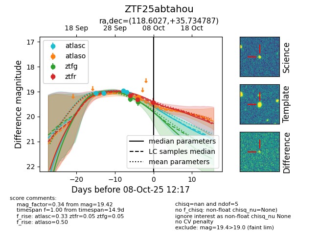
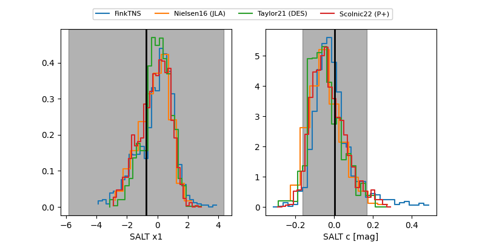

FINK: ZTF25abtahou
Lasair: ZTF25abtahou
ALeRCE: ZTF25abtahou
ZTF25abtahou (ztf,fink)
equatorial (ra, dec) = (118.6027,+35.73479)
galactic (l, b) = (184.7070,+27.53722)


last atlasc=19.02, atlaso=19.22, ztfg=19.42, ztfr=19.42
4 atlasc, 1 atlaso, 2 ztfg, 3 ztfr detections